Los Molinos · costa de Valdivia
Comer mirando bajar el sol.
Una cocinería de la costa, con 183 reseñas y un 4,7.
- 183reseñas en Google
- 4,7de nota promedio
- 548seguidores en Instagram
- 0teléfonos publicados en internet
Para llegar a tiempo
¿A qué hora se pone el sol?
Llegue media hora antes y pida mesa con vista.
- ENE
Cerca de las 21:30
El atardecer más largo del año.
- MAR
Cerca de las 20:15
Todavía con horario de verano.
- JUN
Cerca de las 17:50
Almuerzo tarde, sol temprano.
- SEP
Cerca de las 19:40
Vuelven las tardes largas.
Varían unos minutos cada día y con las nubes.
Plato caliente, cielo naranjo.
En Los Molinos
Lo que se come en la costa
-
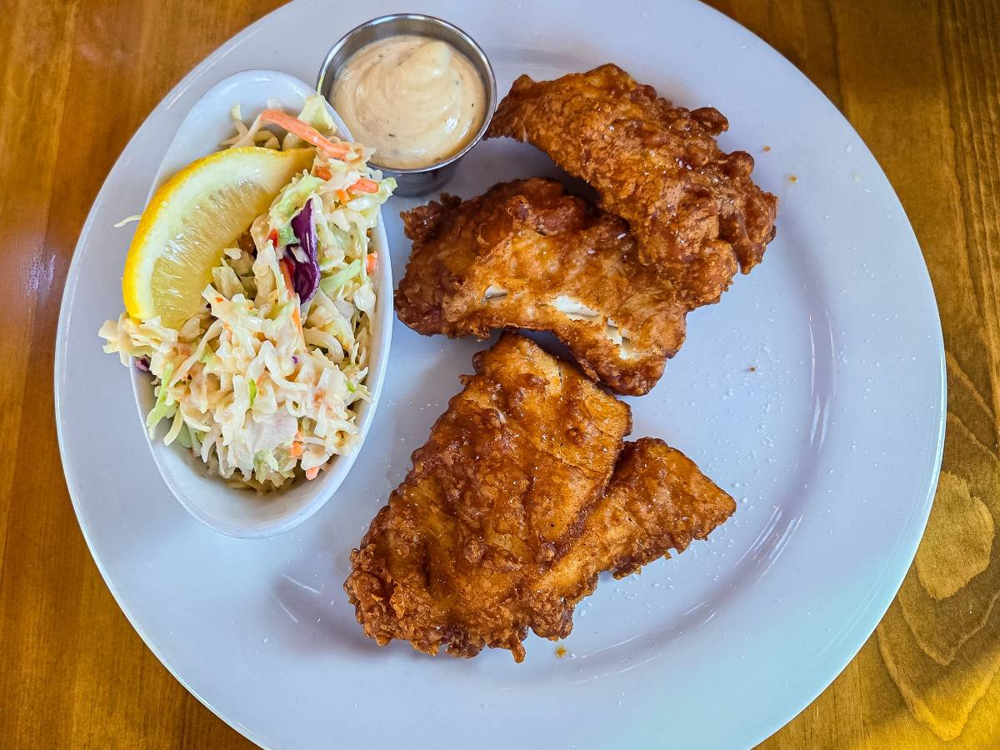
Del día
Pescado frito
Lo que traiga la caleta.
-
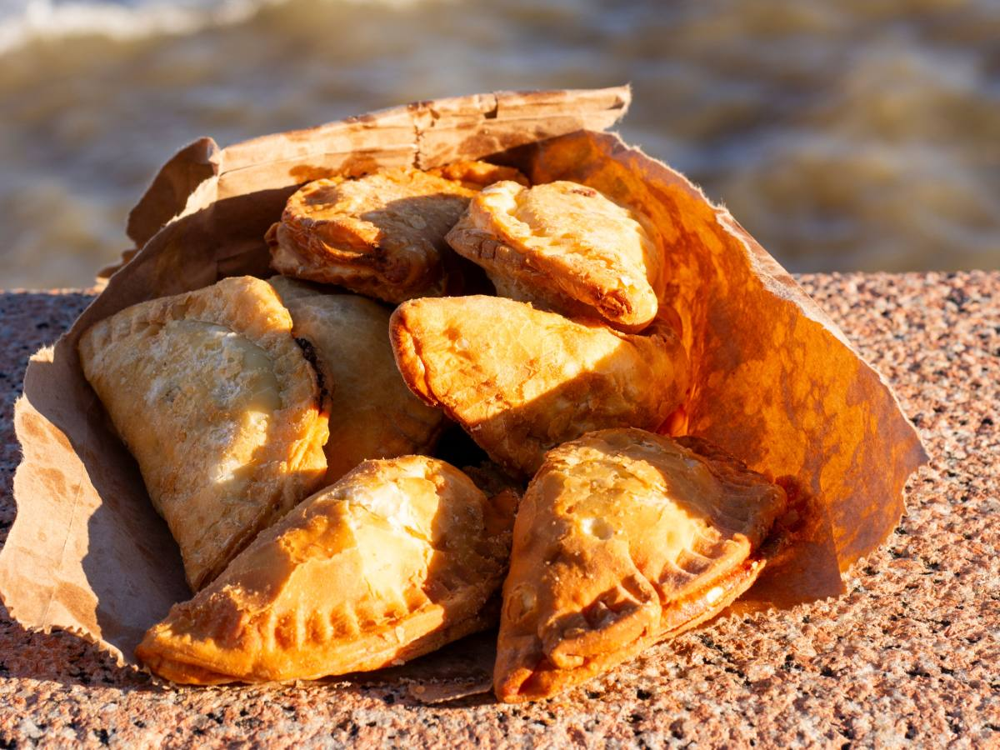
Para empezar
Empanadas
De mariscos o de queso.
-
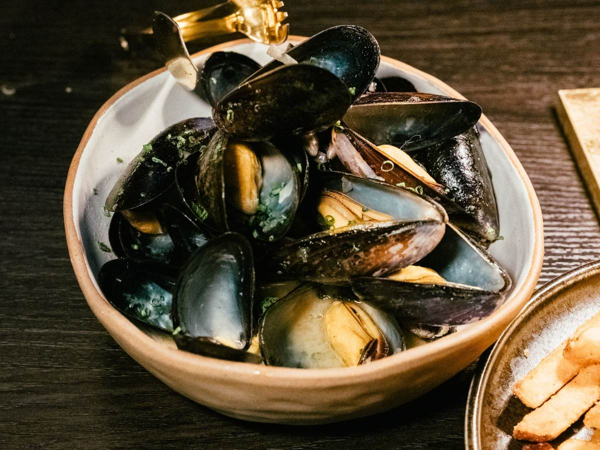
De la roca
Cholgas y choritos
Al vapor o en pailas.
-
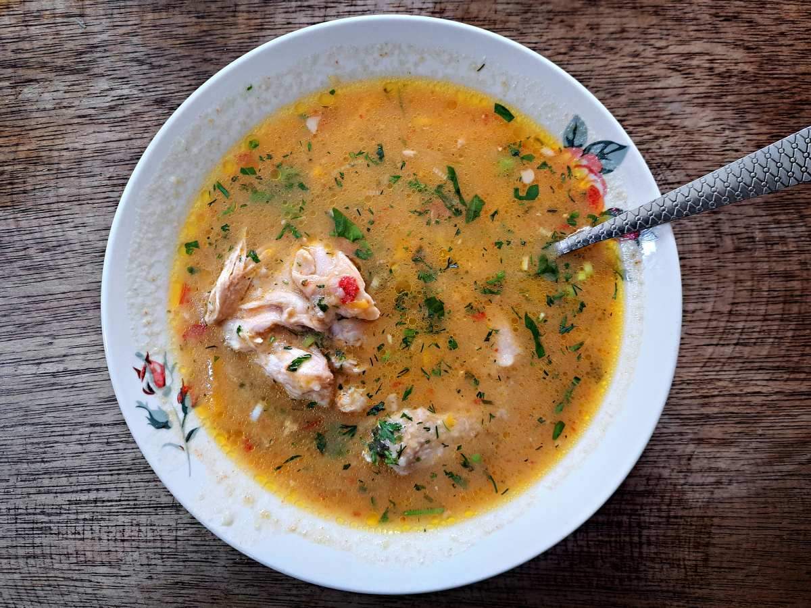
Para el frío
Caldillo
Caldo de pescado bien caliente.
-
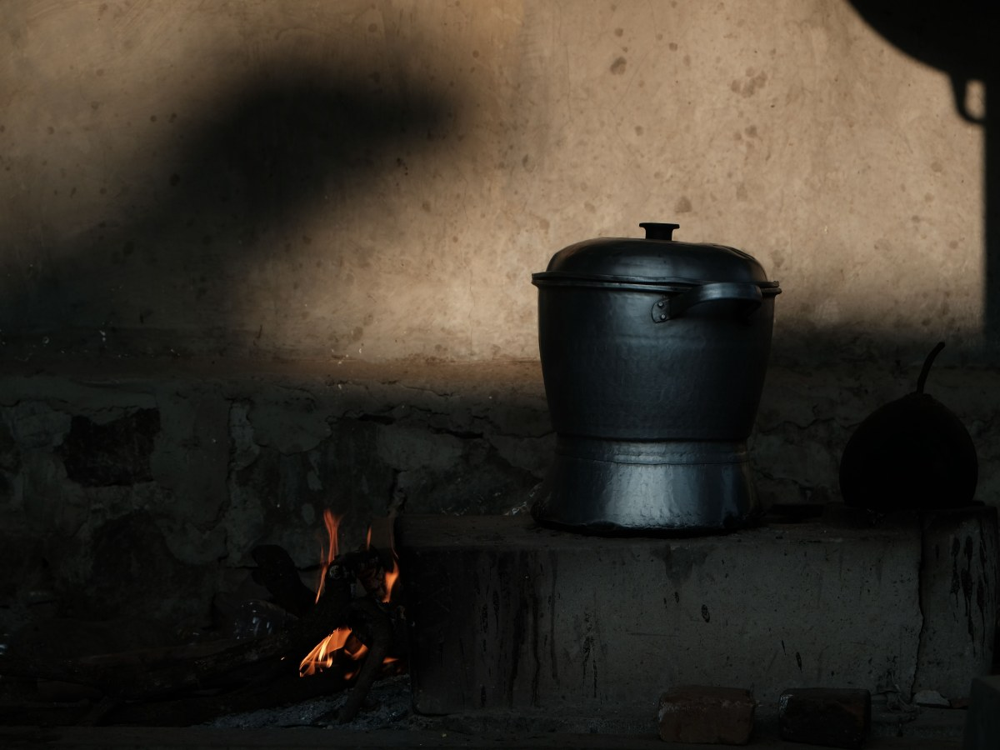
La cocinería
Olla al fuego
Cocina de casa, sin apuro.
-
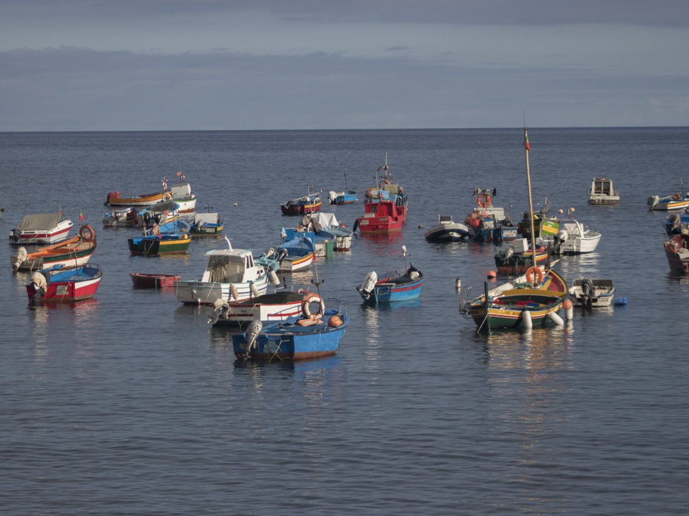
Afuera
La caleta
Botes y mar frente a la mesa.
Son platos típicos de la costa: la carta real la confirma la casa.
183 reseñas y un 4,7.
En Los Molinos, frente al mar
Mar, concha y olla
Una tarde en Los Molinos
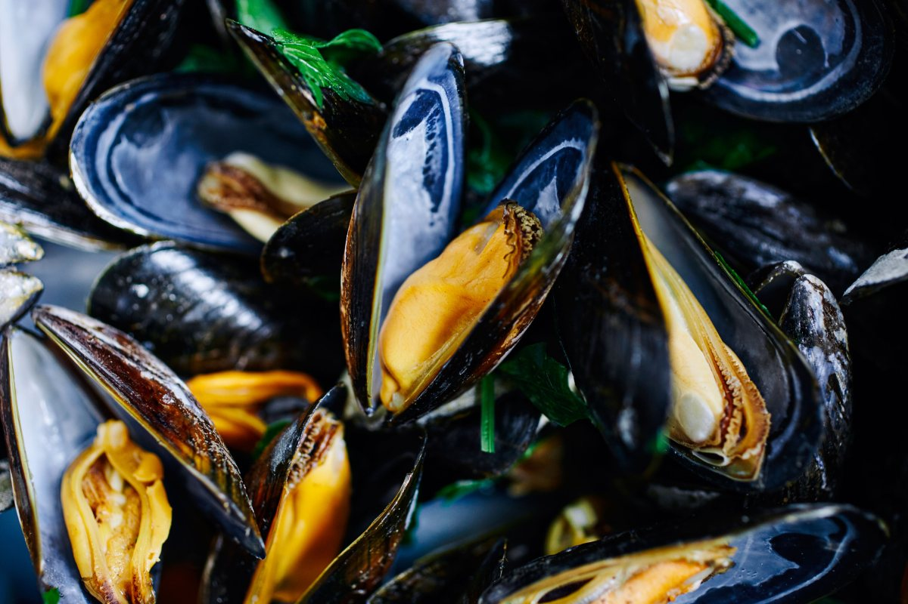
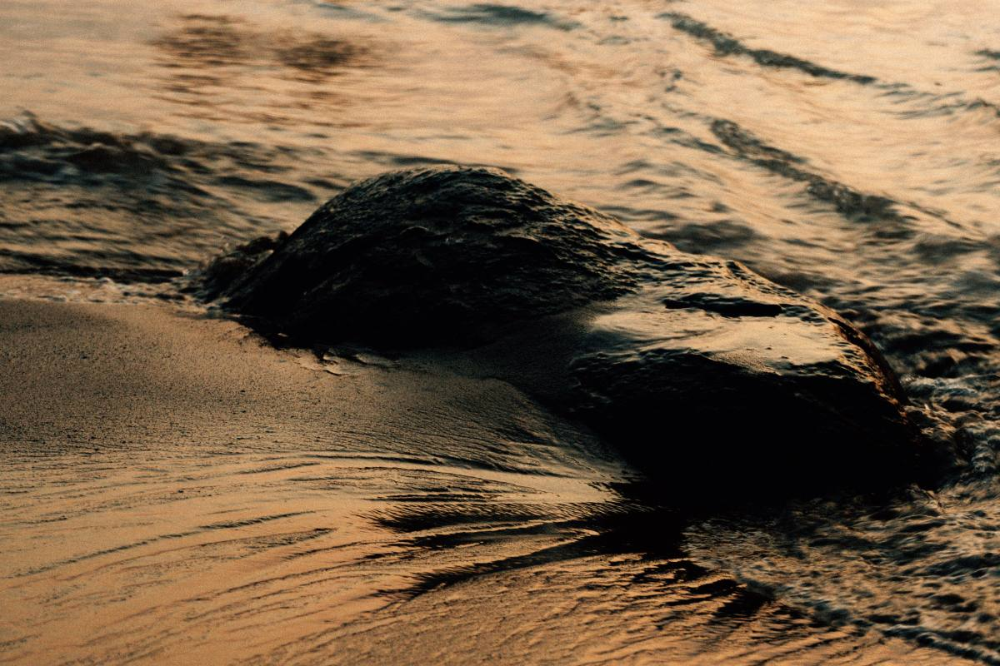
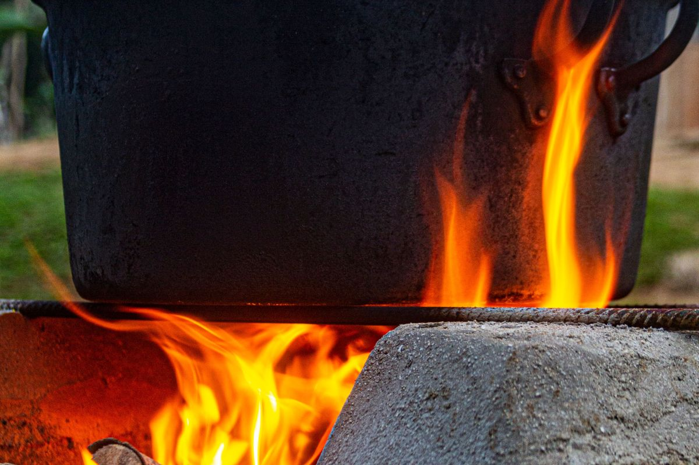
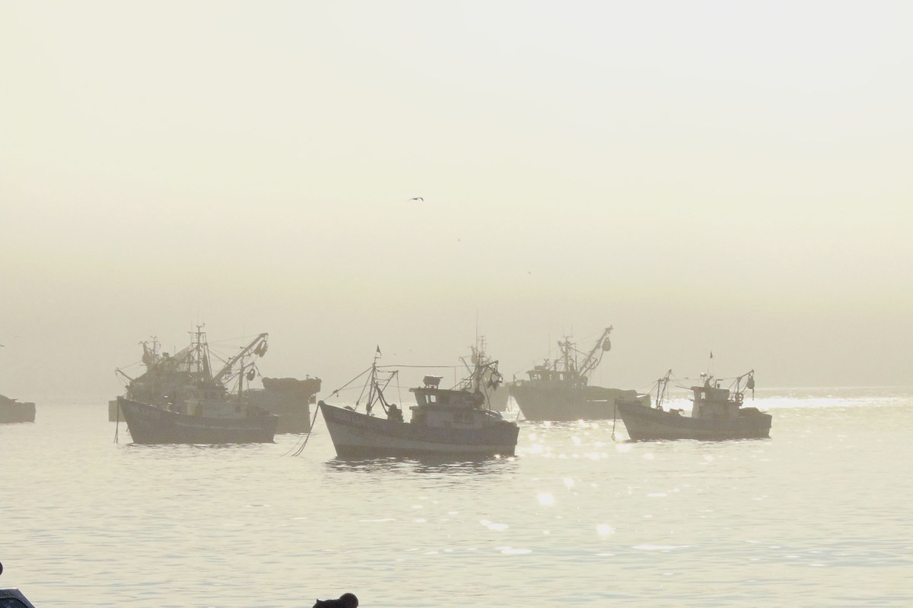
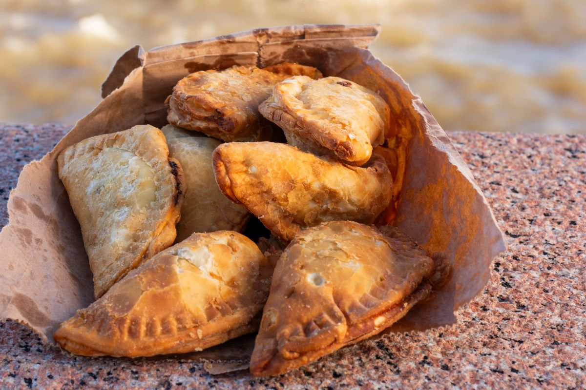
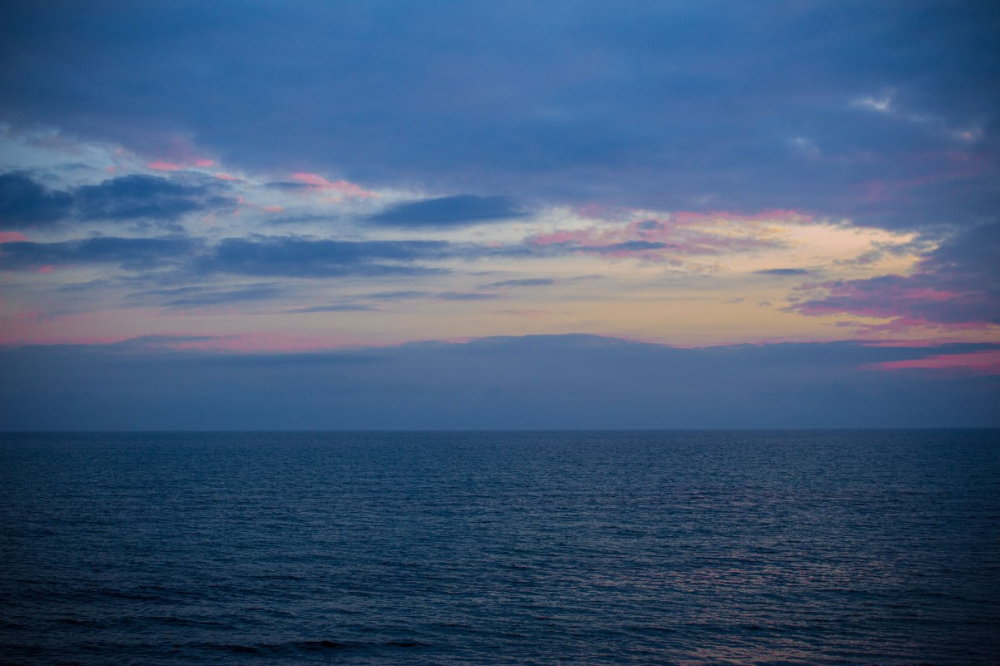
Fotos de referencia: los platos de verdad están en su Instagram.
Dónde estamos
Los Molinos, costa de Valdivia
- Localidad
- Los Molinos, Valdivia
- @hermoso_atardecer65
- Teléfono
- Falta el teléfono
- Horario
- Falta el horario
No hay teléfono publicado: escriba por Instagram antes de ir.
Los Molinos, Valdivia Abrir en Google Maps
Para el dueño
Qué es real y qué falta
Lo verificado
El nombre, la localidad, su Instagram y las 183 reseñas con 4,7.
Lo de ejemplo
Los platos, las horas del atardecer y las fotos.
Lo que falta
Un teléfono, la dirección exacta, el horario y la carta.